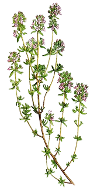

Blóðberg (Thymus praecox arcticus)
Smá fjólublóm; mjög ilmandi,
notað í te eða sem krydd

Vallhumall (Achillea millefolium)
Hvít blómklasar; hefðbundið notað gegn kvefi, hita og til að græða sár.

Ætihvönn (Angelica archangelica)
Stór hvítgræn blómklasar; stönglar og fræ notuð í bakstur og sælgæ

Mýrurt (Rhododendron tomenosum)
Vex í mýrum; notað í te gegn kvefi (en þarf að nota varlega)
Villikamilia (Matricaria discoidea)
Kamilla /(líka kölluð ananasjurt) Litlir hausar sem ilma eins og ananas; gott í te.

Birki (Betula pubescens)
Lauf og safi notuð í te til hreinsunar og sem þvagræsilyf.

Túnfífill (Taraxacum officinale)
Gul blóm sem má borða hrá, sjóða í síróp eða nota í te. Blöðin einnig æt.

Krækiber (Empetrum nigrum)
Ekki blóm, heldur berjaplanta; berjarnar voru mikilvæg fæða.